[2]:
import os
import numpy as np
from astropy.io import ascii
from scipy.interpolate import interp1d
import xidplus
temps=os.listdir('/Users/pdh21/astrodata/SEDs/Berta2013/templates_berta_norm_LIR/')
[4]:
temps
[4]:
['Blue_SF_glx.norm_LIR',
'BroadFIR_SF_glx.norm_LIR',
'Cold_glx.norm_LIR',
'Elliptical.norm_LIR',
'Ly_break.norm_LIR',
'MIR_powlaw_SF_glx.norm_LIR',
'MIRex_SF_glx.norm_LIR',
'Mod_SF_glx.norm_LIR',
'Obs_SF_glx.norm_LIR',
'PAH_DF_glx.norm_LIR',
'Red_SF_glx_1.norm_LIR',
'Red_SF_glx_2.norm_LIR',
'Secular_glx.norm_LIR',
'SF_glx_1.norm_LIR',
'SF_glx_2.norm_LIR',
'SF_Type1_AGN_1.norm_LIR',
'SF_Type1_AGN_2.norm_LIR',
'SF_Type1_AGN_3.norm_LIR',
'SF_Type1_AGN_4.norm_LIR',
'SF_Type2_AGN_1.norm_LIR',
'SF_Type2_AGN_2.norm_LIR',
'SF_Type2_AGN_3.norm_LIR',
'Si_break.norm_LIR',
'Spiral.norm_LIR',
'Torus.norm_LIR',
'Type1_AGN_1.norm_LIR',
'Type2_AGN_1.norm_LIR',
'Type2_AGN_2.norm_LIR',
'Warm_SF_glx.norm_LIR',
'WeakPAH_SF_glx_1.norm_LIR',
'WeakPAH_SF_glx_2.norm_LIR',
'Young_SF_glx.norm_LIR']
Generate Redshift Grid and convert to denominator for flux conversion (e.g. \(4 \pi D_l^2)\)
[247]:
red=np.arange(0,8,0.001)
red[0]=0.000001
from astropy.cosmology import Planck13
import astropy.units as u
div=(4.0*np.pi * np.square(Planck13.luminosity_distance(red).cgs))
div=div.value
[273]:
len(red)
[273]:
8000
Get appropriate filters
[4]:
from xidplus import filters
filter=filters.FilterFile(file=xidplus.__path__[0]+'/../test_files/filters.res')
[5]:
filter.names()
1 Koo-Kron U+ filter (Koo's thesis) - 0001
2 Koo-Kron J+ filter (Koo's thesis) - 0002
3 Koo-Kron F+ filter (Koo's thesis) - 0003
4 Koo-Kron N+ filter (Koo's thesis) - 0004
5 Koo-Kron R band (=127+RG610, data from Koo, Durham) - 0005
6 Couch and Newell (80) BJ (photographic) filter - 0006
7 Couch and Newell (80) RF (photographic) filter - 0007
8 Koo-Kron U+ filter (Bruzual's thesis) - 0008
9 Koo-Kron J+ filter (Bruzual's thesis) - 0009
10 Koo-Kron F+ filter (Bruzual's thesis) - 0010
11 Koo-Kron N+ filter (Bruzual's thesis) - 0011
12 Buser's U filter - 0012
13 Buser's B2 filter - 0013
14 Buser's B3 filter - 0014
15 Buser's V filter - 0015
16 Matthews and Sandage U filter - 0016
17 Matthews and Sandage B filter - 0017
18 Matthews and Sandage V filter - 0018
19 Sandage and Smith B filter - 0019
20 Sandage and Smith V filter - 0020
21 Sandage and Smith R filter - 0021
22 ST-UV14 filter - 0022
23 ST-UV17 filter - 0023
24 ST-UV22 filter - 0024
25 ST-UV27 filter - 0025
26 OAO-UV1 filter - 0026
27 OAO-UV2 filter - 0027
28 OAO-UV3 filter - 0028
29 OAO-UV4 filter - 0029
30 OAO-UV5 filter - 0030
31 OAO-UV6 filter - 0031
32 Johnson's R filter - 0032
33 Johnson's I filter - 0033
34 Johnson's J filter - 0034
35 Johnson's K filter - 0035
36 Johnson's L filter - 0036
37 Butcher's r filter - 0037
38 Butcher's i filter - 0038
39 Butcher-Oemler R filter (10/75 1978, data from Koo, Durham) - 0039
40 Butcher-Oemler R filter ( 5/76 1978, data from Koo, Durham) - 0040
41 Bessell u filter - 0041
42 Bessell g filter - 0042
43 Bessell r filter - 0043
44 UKIRT H FILTER (Leiden, 1983) - 0044
45 R. S. Ellis U(PE) filter - 0045
46 R. S. Ellis J filter - 0046
47 R. S. Ellis R filter - 0047
48 R. S. Ellis N filter - 0048
49 C. MacKay and P. Hall KG3 filter (Cambridge) - 0049
50 C. MacKay and P. Hall I filter (Cambridge) - 0050
51 Gunn g filter + four-shooter Ti CCD + Palomar 200" atmospher - 0051
52 Gunn r filter + four-shooter Ti CCD + Palomar 200" atmospher - 0052
53 Gunn i filter + four-shooter Ti CCD + Palomar 200" atmospher - 0053
54 Gunn z filter + four-shooter Ti CCD + Palomar 200" atmospher - 0054
55 IR J filter + Palomar 200 IR detectors + atmosphere - 0055
56 IR H filter + Palomar 200 IR detectors + atmosphere - 0056
57 IR K filter + Palomar 200 IR detectors + atmosphere - 0057
58 NOAO CTIO 4m ISPI J#186 - 0058
59 NOAO CTIO 4m ISPI H#187 - 0059
60 NOAO CTIO 4m ISPI K'#188 - 0060
61 A. Tyson J filter - 0061
62 A. Tyson R filter - 0062
63 A. Tyson I filter - 0063
64 ANS 1550 Wide Filter (J. Koorneef) - 0064
65 ANS 1800 Filter (J. Koorneef) - 0065
66 ANS 2200 Filter (J. Koorneef) - 0066
67 ANS 2500 Filter (J. Koorneef) - 0067
68 ANS 3300 Filter (J. Koorneef) - 0068
69 Approximate U band for Lilly and Cowie - 0069
70 Approximate I band for Lilly and Cowie - 0070
71 IRAS 12 micron, Neugebauer etal 1984,ApJL,278,L1 - 0071
72 IRAS 25 micron, Neugebauer etal 1984,ApJL,278,L1 - 0072
73 IRAS 60 micron, Neugebauer etal 1984,ApJL,278,L1 - 0073
74 IRAS 100 micron, Neugebauer etal 1984,ApJL,278,L1 - 0074
75 H filter Bessell and Brett PASP 100, 1134, 1988 - 0075
76 J filter Bessell and Brett PASP 100, 1134, 1988 - 0076
77 K filter Bessell and Brett PASP 100, 1134, 1988 - 0077
78 L (3.5 microns) filter Bessell and Brett PASP 100, 1134, 1988 - 0078
79 L' (3.8 microns) filter Bessell and Brett PASP 100, 1134, 1988 - 0079
80 M filter Bessell and Brett PASP 100, 1134, 1988 - 0080
81 IRAM MAMBO-1 1.2 mm, 37 channel (winter 99/00 -today) - 0081
82 IRAM MAMBO-2 1.2 mm,117 channel - 0082
83 g Gunn (original) - 0083
84 r Gunn (original) - 0084
85 i Gunn (original) - 0085
86 z (original) - 0086
87 z + RCA - 0087
88 CCD RCA ESO (JPP reference) - 0088
89 CCD RCA CAHA (Manual d'utilisateurs) - 0089
90 B CAHA (original manuel) - 0090
91 B Bessell - 0091
92 V Bessell - 0092
93 R Bessell - 0093
94 I Bessell - 0094
95 K Prime CFHT Redeye - 0095
96 CCD RCA2 CFHT (Manuel utilisateurs) - 0096
97 Bj TYSON (orig. filter AT, private com.) - 0097
98 CCD TEK#25 (ESO, Manuel Utilisateurs) - 0098
99 CCD LORAL#34 (ESO, Manuel Utilisateurs) - 0099
100 CCD SAIC#1 (CFH, Manuel Utilisateurs) - 0100
101 CCD Lick2 CFHT (CFH, Manuel Utilisateurs) - 0101
102 ESO NTT SUSI B Bessell#639 - 0102
103 ESO NTT SUSI V Bessell#641 - 0103
104 ESO NTT SUSI R Bessell#642 - 0104
105 ESO NTT EMMI V#606 - 0105
106 B#4402 CFHT - 0106
107 R#4609 CFHT - 0107
108 B #1412 CFHT FOCAM - 0108
109 B #1414 CFHT B Tyson selon JB - 0109
110 V #1504 CFHT - 0110
111 V #1510 CFHT FOCAM - 0111
112 R #1611 CFHT - 0112
113 I #1808 CFHT FOCAM - 0113
114 I #1809 CFHT FOCAM - 0114
115 Thomson THX 31156 CCD#17 ESO - 0115
116 Thomson THX 31156 CCD#18 ESO - 0116
117 R#585 Bessell ESO - 0117
118 K #6 UKIRT - 0118
119 Passe-tout - 0119
120 F555W + WFPC2 normalized - 0120
121 F814W + WFPC2 normalized - 0121
122 F300W + WFPC2 normalized - 0122
123 F450W + WFPC2 normalized - 0123
124 F606W + WFPC2 normalized - 0124
125 F702W + WFPC2 normalized - 0125
126 F675W + WFPC2 normalized - 0126
127 F336W + WFPC2 normalized - 0127
128 ESO NTT 3.6m SOFI Js - 0128
129 ESO NTT 3.6m SOFI J - 0129
130 ESO NTT 3.6m SOFI H - 0130
131 ESO NTT 3.6m SOFI Ks - 0131
132 KPNO IRIM 2.12 Filter - 0132
133 KPNO IRIM 2.14 Filter - 0133
134 KPNO IRIM 2.16 Filter - 0134
135 KPNO IRIM H Filter - 0135
136 KPNO IRIM J Filter - 0136
137 KPNO IRIM K Filter - 0137
138 KPNO IRIM K' Filter - 0138
139 VLT Test Camera Detector's Quantum Efficiency - 0139
140 B-band filter of the VLT Test Camera - 0140
141 V-band filter of the VLT Test Camera - 0141
142 R-band filter of the VLT Test Camera - 0142
143 I-band filter of the VLT Test Camera - 0143
144 SUSI2's CCDs Quantum Efficiency - 0144
145 SUSI Bessell U #801 - 0145
146 SUSI Bessell B #811 - 0146
147 SUSI Bessell V #812 - 0147
148 SUSI Bessell R #813 - 0148
149 SUSI Bessell I #814 - 0149
150 FORS Standard U (including instrument + CCD) - 0150
151 FORS Standard B (including instrument + CCD) - 0151
152 FORS Standard V (including instrument + CCD) - 0152
153 FORS Cousins R (including instrument + CCD) - 0153
154 FORS Cousins I (including instrument + CCD) - 0154
155 FORS Gunn G (including instrument + CCD) - 0155
156 ESO 2.2m WFI U#841 + CCD#57 + wfi_2p2_optics (U/38 AKA U38) - 0156
157 ESO 2.2m WFI B#842 + CCD#57 (old B/99, for new see B/123) - 0157
158 ESO 2.2m WFI V#843 + CCD#57 + wfi_2p2_optics (V/89) - 0158
159 ESO 2.2m WFI Rc#844 + CCD#57 + wfi_2p2_optics (Rc/162) - 0159
160 ESO 2.2m WFI Ic#845 + CCD#57 + wfi_2p2_optics (Ic/lwp) - 0160
161 ESO 2.2m WFI Z#846 + CCD#57 + wfi_2p2_optics (Z+/61) - 0161
162 ESO 2.2m WFI U#877 + CCD57 + wfi_2p2_optics (U/50 AKA U35) - 0162
163 ESO 2.2m WFI B#878 + CCD#57 + wfi_2p2_optic (latest B filter B/123) - 0163
164 SDSS u (http://www.sdss.org/dr7/instruments/imager/index.html) - 0164
165 SDSS g (http://www.sdss.org/dr7/instruments/imager/index.html) - 0165
166 SDSS r (http://www.sdss.org/dr7/instruments/imager/index.html) - 0166
167 SDSS i (http://www.sdss.org/dr7/instruments/imager/index.html) - 0167
168 SDSS z (http://www.sdss.org/dr7/instruments/imager/index.html) - 0168
169 ESO VST OmegaCAM u - 0169
170 ESO VST OmegaCAM g - 0170
171 ESO VST OmegaCAM r - 0171
172 ESO VST OmegaCAM i - 0172
173 ESO VST OmegaCAM z - 0173
174 CFHT CFH12k B (Mould) - 0174
175 CFHT CFH12k V (Mould) - 0175
176 CFHT CFH12k R (Mould) - 0176
177 CFHT CFH12k I (Mould) - 0177
178 CFHT CFH12k Z (Prime) - 0178
179 JCMT SCUBA 450 micron - 0179
180 JCMT SCUBA 850 micron - 0180
181 AzTEC 1.1 mm - 0181
182 Infamous 2.2m UH8K B filter + loral3 + MK atmosphere - 0182
183 2.2m UH8K V filter + loral 3 + atmosphere - 0183
184 2.2m UH8K I filter + MK atmosphere - 0184
185 KPNO B, from AAT Users Manual - 0185
186 H+K filter - 0186
187 Wyin filter U (filter + CCD reponse) - 0187
188 Wyin filter B (filter + CCD reponse) - 0188
189 ESO VLT ISAAC J (ESO web pages) - 0189
190 ESO VLT ISAAC H (ESO web pages) - 0190
191 ESO VLT ISAAC Ks (ESO web pages) - 0191
192 ESO VLT ISAAC L (ESO web pages) - 0192
193 ESO VLT ISAAC M (ESO web pages) - 0193
194 Palomar 200" WIRC J - 0194
195 Palomar 200" WIRC K - 0195
196 Calar Alto 3.5m Omega2000 J - 0196
197 Calar Alto 3.5m OmegaPrime K - 0197
198 Spitzer IRAC CH1 (3.6 micron) - 0198
199 Spitzer IRAC CH2 (4.5 microns) - 0199
200 Spitzer IRAC CH3 (5.8 microns) - 0200
201 Spitzer IRAC CH4 (8.0 microns) - 0201
202 Spitzer MIPS CH1 (24 microns) - 0202
203 Subaru SuprimeCam U - 0203
204 Subaru SuprimeCam B - 0204
205 Subaru SuprimeCam V - 0205
206 Subaru SuprimeCam r - 0206
207 Subaru SuprimeCam i - 0207
208 Subaru SuprimeCam z - 0208
209 UH 2.2m QUIRC H+K (AKA HK') - 0209
210 CFHT MEgaCam i2 AKA y (new,after October 2007 - http://cadcwww.dao.nrc.ca/megapipe/docs/filters.html) - 0210
211 NOAO KPNO 4m FLAMINGOS J (J-2000toJuly2003) - 0211
212 NOAO KPNO 4m FLAMINGOS H (H-2000toJuly2003) - 0212
213 NOAO KPNO 4m FLAMINGOS Ks (Ks-2000toJuly2003) - 0213
214 Spitzer MIPS CH2 (70 micron) - 0214
215 Spitzer MIPS CH3 (160 micron) - 0215
216 SPIRE 250 micron - 0216
217 SPIRE 350 micron - 0217
218 SPIRE 500 micron - 0218
219 2MASS J - 0219
220 2MASS H - 0220
221 2MASS Ks - 0221
222 UKIRT WFCAM (UKIDSS) J - 0222
223 UKIRT WFCAM (UKIDSS) H - 0223
224 UKIRT WFCAM (UKIDSS) K - 0224
225 INT WFC u - 0225
226 INT WFC g - 0226
227 INT WFC r - 0227
228 INT WFC i - 0228
229 INT WFC z - 0229
230 NOAO KPNO 4m MOSAIC1 U band (k1001) - 0230
231 NOAO KPNO 4m MOSAIC1 g band (SDSS k1017) - 0231
232 NOAO KPNO 4m MOSAIC1 r band (SDSS k1018) - 0232
233 NOAO KPNO 4m MOSAIC1 i band (SDSS k1019) - 0233
234 NOAO KPNO 4m MOSAIC1 z band (SDSS k1020) - 0234
235 NOAO CTIO 4m MOSAIC2 u band (SDSS c6022) - 0235
236 NOAO CTIO 4m MOSAIC2 g band (SDSS c6017) - 0236
237 NOAO CTIO 4m MOSAIC2 r band (SDSS c6018) - 0237
238 NOAO CTIO 4m MOSAIC2 i band (SDSS c6019) - 0238
239 NOAO CTIO 4m MOSAIC2 z band (SDSS c6022) - 0239
240 NOAO CTIO 4m MOSAIC2 U band (c6001) - 0240
241 CFHT MEgaCam u* http://www2.cadc-ccda.hia-iha.nrc-cnrc.gc.ca/community/CFHTLS-SG/docs/extra/filters.html - 0241
242 CFHT MegaCam g http://www2.cadc-ccda.hia-iha.nrc-cnrc.gc.ca/community/CFHTLS-SG/docs/extra/filters.html - 0242
243 CFHT MegaCam r http://www2.cadc-ccda.hia-iha.nrc-cnrc.gc.ca/community/CFHTLS-SG/docs/extra/filters.html - 0243
244 CFHT MegaCam i AKA i1 (old, before Octorber 2007 for new see CFHT MegaCam i2 AKA y; http://cadcwww.dao.nrc.ca/megapipe/docs/filters.html) - 0244
245 CFHT MegaCam z http://www2.cadc-ccda.hia-iha.nrc-cnrc.gc.ca/community/CFHTLS-SG/docs/extra/filters.html - 0245
246 AKARI N60 http://www.ir.isas.jaxa.jp/AKARI/Observation/RSRF/FIS_FAD/index.html - 0246
247 AKARI WIDE-S http://www.ir.isas.jaxa.jp/AKARI/Observation/RSRF/FIS_FAD/index.html - 0247
248 AKARI WIDE-L http://www.ir.isas.jaxa.jp/AKARI/Observation/RSRF/FIS_FAD/index.html - 0248
249 AKARI N160 http://www.ir.isas.jaxa.jp/AKARI/Observation/RSRF/FIS_FAD/index.html - 0249
250 PACS 70 Instrument Simulator as of Herschel Launch - 0250
251 PACS 100 Instrument Simulator as of Herschel Launch - 0251
252 PACS 160 Instrument Simulator as of Herschel Launch - 0252
253 NOAO KPNO 4m FLAMINGOS J from 2003 to present: http://flamingos.astro.ufl.edu/Filter_Info/index.html (FLAMINGOS.BARR.J.MAN240B.WarmFilter.txt) - 0253
254 NOAO KPNO 4m FLAMINGOS H from 2003 to present: http://flamingos.astro.ufl.edu/Filter_Info/index.html (FLAMINGOS.BARR.H.MAN109A.WarmFilter.txt) - 0254
255 NOAO KPNO 4m FLAMINGOS Ks from 2003 to present: http://flamingos.astro.ufl.edu/Filter_Info/index.html (FLAMINGOS.BARR.Ks.MAN306A.WarmFilter.txt) - 0255
256 NOAO KPNO 4m FLAMINGOS K from 2003 to present: http://flamingos.astro.ufl.edu/Filter_Info/index.html (FLAMINGOS.K-band.2000toPresentDay.NOAO-OCLI-Filter.txt) - 0256
257 Subaru SuprimeCam Rc - 0257
258 Subaru SuprimeCam Ic - 0258
259 Subaru SuprimeCam g - 0259
260 Spitzer IRS 16 micron (bluePUtrans) - 0260
261 Spitzer IRS 22 micron (redPUtrans) - 0261
262 ESO VLT VIMOS U (transmission is average of 4 quadrants) - 0262
263 ESO VLT VIMOS B (transmission is average of 4 quadrants) - 0263
264 ESO VLT VIMOS V (transmission is average of 4 quadrants) - 0264
265 ESO VLT VIMOS R (transmission is average of 4 quadrants) - 0265
266 ESO VLT VIMOS I (transmission is average of 4 quadrants) - 0266
267 ESO VLT VIMOS z (transmission is average of 4 quadrants) - 0267
268 NOAO KPNO 4m MOSAIC1 R - 0268
269 UKIRT WFCAM (UKIDSS) Z - 0269
270 UKIRT WFCAM (UKIDSS) Y - 0270
271 CFHT WIRCam J (cfh8101) - 0271
272 CFHT WIRCam H (cfh8201) - 0272
273 CFHT WIRCam Ks (cfh8302) - 0273
274 NOAO KPNO 4m MOSAIC1 Bw - 0274
275 NOAO KPNO 4m MOSAIC1 B - 0275
276 NOAO KPNO 4m MOSAIC1 V - 0276
277 NOAO KPNO 4m MOSAIC1 I - 0277
278 NOAO CTIO 4m MOSAIC2 B - 0278
279 NOAO CTIO 4m MOSAIC2 V - 0279
280 NOAO CTIO 4m MOSAIC2 R - 0280
281 NOAO CTIO 4m MOSAIC2 I - 0281
282 TIFKAM/ONIS J - 0282
283 TIFKAM/ONIS H - 0283
284 TIFKAM/ONIS K - 0284
285 90prime SDSS-u - 0285
286 90prime SDSS-z - 0286
287 90prime U - 0287
288 90prime B - 0288
289 90prime V - 0289
290 90prime R - 0290
291 90prime I - 0291
292 90prime_Washington_M - 0292
293 NEWFIRM J - 0293
294 NEWFIRM H - 0294
295 NEWFIRM Ks - 0295
296 GALEX NUV - 0296
297 GALEX FUV - 0297
298 MMT Megacam u - 0298
299 MMT Megacam g - 0299
300 MMT Megacam r - 0300
301 MMT Megacam i - 0301
302 MMT Megacam z - 0302
303 Subaru MOIRCS Y - 0303
304 Subaru MOIRCS J - 0304
305 Subaru MOIRCS H - 0305
306 Subaru MOIRCS Ks - 0306
307 Subaru MOIRCS K - 0307
308 APEX SABOCA 350 micron - 0308
309 APEX LABOCA 850 micron - 0309
310 HST NIC3 F110W (J) - 0310
311 HST NIC3 F160W (H) - 0311
312 HST NIC3 F222M (K) - 0312
313 HST ACS/WFC F435W (B) - 0313
314 HST ACS/WFC F606W (V) - 0314
315 HST ACS/WFC F814W (I) - 0315
316 HST ACS/WFC F475W (g) - 0316
317 HST ACS/WFC F625W (r) - 0317
318 HST ACS/WFC F775W (i) - 0318
319 HST ACS/WFC F850LP (z) - 0319
320 Subaru SuprimeCam IA427 - 0320
321 Subaru SuprimeCam IA445 - 0321
322 Subaru SuprimeCam IA464 - 0322
323 Subaru SuprimeCam IA484 - 0323
324 Subaru SuprimeCam IA505 - 0324
325 Subaru SuprimeCam IA527 - 0325
326 Subaru SuprimeCam IA550 - 0326
327 Subaru SuprimeCam IA574 - 0327
328 Subaru SuprimeCam IA598 - 0328
329 Subaru SuprimeCam IA624 - 0329
330 Subaru SuprimeCam IA651 - 0330
331 Subaru SuprimeCam IA679 - 0331
332 Subaru SuprimeCam IA709 - 0332
333 Subaru SuprimeCam IA738 - 0333
334 Subaru SuprimeCam IA767 - 0334
335 Subaru SuprimeCam IA797 - 0335
336 Subaru SuprimeCam IA827 - 0336
337 Subaru SuprimeCam IA856 - 0337
338 Subaru SuprimeCam IA907 - 0338
339 Subaru SuprimeCam NA656 - 0339
340 Subaru SuprimeCam NB711 - 0340
341 Subaru SuprimeCam NB816 - 0341
342 Subaru SuprimeCam NB921 - 0342
343 LBT-LBC blue Uspec - 0343
344 LBT-LBC blue U - 0344
345 LBT-LBC blue B - 0345
346 LBT-LBC blue V - 0346
347 LBT-LBC blue g (#1) - 0347
348 LBT-LBC blue r (#1) - 0348
349 LBT-LBC red V - 0349
350 LBT-LBC red R - 0350
351 LBT-LBC red I - 0351
352 LBT-LBC red r - 0352
353 LBT-LBC red i - 0353
354 LBT-LBC red z - 0354
355 LBT-LBC red F972N20 - 0355
356 LBT-LBC red Y - 0356
357 ISO CAM LW2 (6.7/7 micron) - 0357
358 ISO CAM LW10 (12 micron) - 0358
359 ISO CAM LW3 (14.3/15 micron) -0359
360 ISO PHT C100-DETECTOR C90-FILTER (90/5 micron) - 0360
361 ISO PHT C200-DETECTOR C160-FILTER (170/5 micron) - 0361
362 VISTA VIRCAM Z - 0362
363 VISTA VIRCAM Y - 0363
364 VISTA VIRCAM J - 0364
365 VISTA VIRCAM H - 0365
366 VISTA VIRCAM Ks - 0366
367 HST WFC3 F125W [J band]- 0367
368 HST WFC3 F160W [H band]- 0368
369 AKARI IRC N2 - 0369
370 AKARI IRC N3 - 0370
371 AKARI IRC N4 - 0371
372 AKARI IRC S7 - 0372
373 AKARI IRC S9W - 0373
374 AKARI IRC S11 - 0374
375 AKARI IRC L15 - 0375
376 AKARI IRC L18W - 0376
377 AKARI IRC L24 - 0377
378 WISE 1 (3.4 mum) - 0378
379 WISE 2 (4.6 mum) - 0379
380 WISE 3 (12 mum) - 0380
381 WISE 4 (22 mum) - 0381
382 Pan-STARRS1 gp1 - 0382
383 Pan-STARRS1 rp1 - 0383
384 Pan-STARRS1 ip1 - 0384
385 Pan-STARRS1 zp1 - 0385
386 Pan-STARRS1 yp1 - 0386
387 Pan-STARRS1 wp1 - 0387
388
[6]:
SPIRE_250=filter.filters[215]
SPIRE_350=filter.filters[216]
SPIRE_500=filter.filters[217]
MIPS_24=filter.filters[201]
PACS_100=filter.filters[250]
PACS_160=filter.filters[251]
bands=[SPIRE_250,SPIRE_350,SPIRE_500,MIPS_24,PACS_100,PACS_160]
eff_lam=[250.0,350.0,500.0,24.0, 100.0,160.0]
[7]:
for b in bands:
print(b.name)
SPIRE 250 micron - 0216
SPIRE 350 micron - 0217
SPIRE 500 micron - 0218
Spitzer MIPS CH1 (24 microns) - 0202
PACS 100 Instrument Simulator as of Herschel Launch - 0251
PACS 160 Instrument Simulator as of Herschel Launch - 0252
[94]:
import pandas as pd
template=ascii.read('/Users/pdh21/astrodata/SEDs/Berta2013/templates_berta_norm_LIR/'+temps[0])
df=pd.DataFrame(template['col1'].data/1E4,columns=['wave'])
print(template['col1'].data/1E4)
SEDs=np.empty((len(temps),len(bands),red.size))
for i in range(0,len(temps)):
template=ascii.read('/Users/pdh21/astrodata/SEDs/Berta2013/templates_berta_norm_LIR/'+temps[i])
df[temps[i]]=1E30*3.826E33*template['col2']*((template['col1']/1E4)**2)/3E14
flux=template['col2']*((template['col1']/1E4)**2)/3E14
wave=template['col1']/1E4
ind=(wave > 8) & (wave < 1E3)
print(np.trapz(template['col2'][ind],x=wave[ind]*1E4))
print(np.trapz(flux[ind][::-1],x=3E14/(wave[ind][::-1])))
for z in range(0,red.size):
sed=interp1d((red[z]+1.0)*wave, flux)
for b in range(0,len(bands)):
SEDs[i,b,z]=1E30*3.826E33*(1.0+red[z])*filters.fnu_filt(sed(bands[b].wavelength/1E4),3E8/(bands[b].wavelength/1E10),bands[b].transmission,3E8/(eff_lam[b]*1E-6),sed(eff_lam[b]))/div[z]
[ 9.09999900e-03 9.40000000e-03 9.59999900e-03 ..., 1.92899989e+03
1.93899920e+03 1.94899898e+03]
0.999999999975
9.99948820898e-05
0.99999999803
9.99972496544e-05
1.00000000022
9.99986398139e-05
0.999999998638
9.99981291963e-05
0.99999999959
9.99980481754e-05
0.999999998941
9.9994351254e-05
0.999999999473
9.99945356128e-05
0.999999998487
9.99985287929e-05
0.999999999224
9.99924626717e-05
1.00000000252
9.99942862546e-05
0.999999999244
9.99934616998e-05
0.999999998734
9.99978906062e-05
0.999999998627
9.99975982287e-05
1.00000000001
9.99978318847e-05
1.00000000032
9.99982075976e-05
0.999999999528
9.99931710553e-05
0.999999998064
9.99973969093e-05
0.999999998802
9.99981096303e-05
0.999999998357
9.99934745402e-05
1.0000000015
9.99946455636e-05
1.00000000065
9.99976450848e-05
0.999999999482
9.9997162806e-05
0.999999997908
9.99972721906e-05
1.00000000223
9.99944923657e-05
1.00000000041
9.99917794923e-05
1.00000000008
9.99882557381e-05
1.00000000182
9.99945487078e-05
0.99999999873
9.99930391064e-05
1.00000000335
9.99925550047e-05
1.00000000127
9.99968344864e-05
1.00000000007
9.99978574898e-05
0.999999999908
9.99987803337e-05
Read in Michael’s templates¶
Individual infrared templates are given in
http://astro.imperial.ac.uk/public/mrr/swirephotzcat/templates/cirrus.dat http://astro.imperial.ac.uk/public/mrr/swirephotzcat/templates/M82.dat http://astro.imperial.ac.uk/public/mrr/swirephotzcat/templates/A220.dat
as pairs of numbers log10 lambda(mu), log vu S(nu),
and in http://astro.imperial.ac.uk/public/mrr/swirephotzcat/templates/dusttor.dat
as pairs of numbers log10 lambda(mu), vu S(nu) [first two columns only].
[8]:
from astropy.table import Table
[279]:
cirrus=Table.read('/Users/pdh21/astrodata/SEDs/MRR/cirrus.dat', format='ascii')
dusttor=Table.read('/Users/pdh21/astrodata/SEDs/MRR/dusttor.dat', format='ascii')
M82=Table.read('/Users/pdh21/astrodata/SEDs/MRR/M82.dat', format='ascii')
A220=Table.read('/Users/pdh21/astrodata/SEDs/MRR/A220.dat', format='ascii')
dusttor['col2']=np.log(dusttor['col2'])
cirrus.add_row([0.1,-15])
M82.add_row([0.1,-10])
[280]:
import pylab as plt
%matplotlib inline
plt.plot(cirrus['col1'],cirrus['col2'])
plt.plot(dusttor['col1'],dusttor['col2'])
plt.plot(M82['col1'],M82['col2'])
plt.plot(A220['col1'],A220['col2'])
[280]:
[<matplotlib.lines.Line2D at 0x13939ec50>]
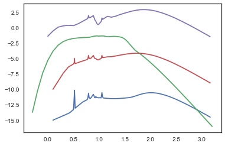
[281]:
import pandas as pd
df_comb=pd.DataFrame(np.power(10.0,cirrus['col1'].data),columns=['wave'])
MRR_temps=[cirrus, A220,M82,dusttor]
SEDs_comb=np.empty((len(MRR_temps),len(bands),red.size))
for i in range(0,len(MRR_temps)):
flux=np.power(10.0,MRR_temps[i]['col2'])/(3.0E14/np.power(10.0,MRR_temps[i]['col1']))
wave=np.power(10.0,MRR_temps[i]['col1'])
ind=(wave > 8) & (wave < 1E3)
flux=1E-4*flux/np.trapz(flux[ind],x=3E14/wave[ind])
print(np.trapz(flux[ind],x=3E14/wave[ind]))
sed=interp1d(wave, 1E30*3.826E33*flux)
df_comb[str(i)]=sed(df_comb['wave'])
for z in range(0,red.size):
sed=interp1d((red[z]+1.0)*wave, flux)
for b in range(0,len(bands)):
try:
SEDs_comb[i,b,z]=1E30*3.826E33*(1.0+red[z])*filters.fnu_filt(sed(bands[b].wavelength/1E4),3E8/(bands[b].wavelength/1E10),bands[b].transmission,3E8/(eff_lam[b]*1E-6),sed(eff_lam[b]))/div[z]
except ValueError:
print(red[z],bands[b].name)
0.0001
0.0001
0.0001
0.0001
[282]:
import pylab as plt
%matplotlib inline
plt.semilogy(red,SEDs_comb[0,0,:]*np.power(10.0,9))
plt.semilogy(red,SEDs_comb[0,1,:]*np.power(10.0,9),c='g')
plt.semilogy(red,SEDs_comb[0,2,:]*np.power(10.0,9),c='r')
plt.semilogy(red,SEDs_comb[0,3,:]*np.power(10.0,9),c='m')
[282]:
[<matplotlib.lines.Line2D at 0x13977ca20>]

[249]:
div_test=(4.0*np.pi * np.square(Planck13.luminosity_distance(0.001).cgs))
div_test=div_test.value
[328]:
plt.loglog(df_comb['wave'],np.power(10.0,8)*(1.0+0.001)*df_comb['0']/div_test)
plt.loglog(df_comb['wave'],np.power(10.0,8)*(1.0+0.001)*df_comb['1']/div_test)
plt.loglog(df_comb['wave'],np.power(10.0,8)*(1.0+0.001)*df_comb['2']/div_test)
plt.loglog(df_comb['wave'],np.power(10.0,8)*(1.0+0.001)*df_comb['3']/div_test)
#plt.loglog(df['wave'],np.power(10.0,8)*(1.0+0.001)*df[temps[0]]/div_test)
[328]:
[<matplotlib.lines.Line2D at 0x13be75b38>]
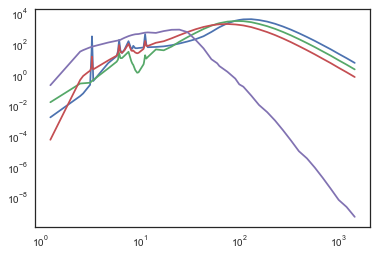
[ ]:
np.save('SED_comb', SEDs_comb)
[142]:
df_comb.to_pickle('SEDS_IR_comb_full.pkl')
[143]:
ls
SEDS_Herschel_full.pkl
SEDS_IR_comb_full.pkl
SEDS_IR_full.pkl
SEDS_full.pkl
SED_Herschel.npy
SED_IR.npy
SED_IR_sig.npy
SED_SPIRE_PACS100.npy
SED_comb.npy
SED_prior_model.ipynb
SED_prior_model_v2.ipynb
XID+SPIRE.pkl
XID+example_run_script.ipynb
XID+example_run_script_SED.ipynb
XID+posterior_analysis_validation.ipynb
foo.html
log10_SED_IR_sig.npy
test.fits
test.pkl
[15]:
from bokeh.io import output_notebook, show
from bokeh.layouts import gridplot, column
from bokeh.plotting import figure
from bokeh.io import push_notebook
output_notebook()
from bokeh.models import HoverTool, Range1d
from bokeh.models import ColumnDataSource, DataSource
from bokeh.models import CustomJS, ColumnDataSource, Slider
[22]:
from ipywidgets import interact
import numpy as np
from bokeh.io import push_notebook, show, output_notebook
from bokeh.plotting import figure
output_notebook()
plot_options = dict(width=250, plot_height=250)
LIR=12
# create a new plot
source = ColumnDataSource(
data=dict(
x=SEDs[:,0,200]*10.0**LIR,
y=SEDs[:,1,200]*10.0**LIR,
z=SEDs[:,2,200]*10.0**LIR,
width=(SEDs[:,0,200]*10.0**LIR)/5.0,
height=(SEDs[:,1,200]*10.0**LIR)/5.0,
depth=(SEDs[:,2,200]*10.0**LIR)/5.0,
desc=temps,
)
)
hover1 = HoverTool(
tooltips=[
("SED", "@desc"),
]
)
hover2 = HoverTool(
tooltips=[
("SED", "@desc"),
]
)
hover3 = HoverTool(
tooltips=[
("SED", "@desc"),
]
)
s1 = figure(**plot_options,tools=[hover1, 'pan', 'wheel_zoom'])
s1.circle('x', 'y', size=10, source=source,color="navy", alpha=0.0)
s1.ellipse('x', 'y', height='height',width='width', source=source,color="navy", alpha=0.2)
s1.yaxis.axis_label = r'350'
# create a new plot and share both ranges
s2 = figure(x_range=s1.x_range, **plot_options,tools=[hover2, 'pan', 'wheel_zoom'])
s2.circle('x', 'z', size=10, source=source,color="navy", alpha=0.0)
s2.ellipse('x', 'z',height='depth',width='width' , source=source,color="navy", alpha=0.2)
s2.yaxis.axis_label = r'500'
s2.xaxis.axis_label = r'250'
# create a new plot and share only one range
s3 = figure(x_range=s1.y_range,y_range=s2.y_range, **plot_options,tools=[hover3, 'pan', 'wheel_zoom'])
s3.circle('y', 'z', size=10, source=source,color="navy", alpha=0.0)
s3.ellipse('y', 'z',height='depth',width='height', source=source,color="navy", alpha=0.2)
s3.xaxis.axis_label = r'350'
p = gridplot([[s1,],[s2, s3]])
def update(LIR=12,z=red[200]):
ind=np.long(z*100)
print(ind)
source.data['x']=SEDs[:,0,ind]*10.0**LIR
source.data['y']=SEDs[:,1,ind]*10.0**LIR
source.data['z']=SEDs[:,2,ind]*10.0**LIR
source.data['width']=np.full(SEDs.shape[0],np.std(SEDs[:,0,ind]*10.0**LIR))
source.data['depth']=np.full(SEDs.shape[0],np.std(SEDs[:,1,ind]*10.0**LIR))
source.data['height']=np.full(SEDs.shape[0],np.std(SEDs[:,2,ind]*10.0**LIR))
push_notebook()
show(p, notebook_handle=True)
interact(update,LIR=(8,14,0.01),z=(red[0],red[-1],0.01))
[22]:
<function __main__.update>
[32]:
samps=np.empty((6,2000))
for i in range(0,2000):
samps[:,i]=np.sum(SEDs_comb[:,:,np.random.randint(len(red))].T*10.0**np.random.uniform(low=np.array([5,5,5,5]),high=np.array([12,12,12,12]))
,axis=1)
[38]:
df=pd.DataFrame(samps.T,columns=['250','350','500','24', '100', '160'])
import seaborn as sns
import pylab as plt
%matplotlib inline
g=sns.PairGrid(df)
g.map_diag(sns.kdeplot)
g.map_lower(sns.kdeplot,n_levels=20, shade=True,shade_lowest=False)
g.map_upper(plt.scatter, alpha=0.1)
for i in range(0,6):
for j in range(0,6):
g.axes[i,j].set_ylim(-10,30)
g.axes[i,j].set_xlim(-10,30)
[33]:
from ipywidgets import interact
import numpy as np
from bokeh.io import push_notebook, show, output_notebook
from bokeh.plotting import figure
output_notebook()
plot_options = dict(width=250, plot_height=250)
LIR=np.array([12,12,12,12])
# create a new plot
source = ColumnDataSource(
data=dict(
s250=SEDs_comb[:,0,200]*10.0**LIR,
s350=SEDs_comb[:,1,200]*10.0**LIR,
s500=SEDs_comb[:,2,200]*10.0**LIR,
s24=SEDs_comb[:,3,200]*10.0**LIR,
s100=SEDs_comb[:,4,200]*10.0**LIR,
s160=SEDs_comb[:,5,200]*10.0**LIR,
)
)
s0_0 = figure(**plot_options,tools=[ 'pan', 'wheel_zoom'])
s0_0.circle('s100', 's160', size=10, source=source,color="navy", alpha=0.2)
s0_0.yaxis.axis_label = r'160'
# create a new plot and share both ranges
s0_1 = figure(x_range=s0_0.x_range, **plot_options,tools=[ 'pan', 'wheel_zoom'])
s0_1.circle('s100', 's250', size=10, source=source,color="navy", alpha=0.2)
s0_1.yaxis.axis_label = r'250'
s0_2 = figure(x_range=s0_0.x_range, **plot_options,tools=[ 'pan', 'wheel_zoom'])
s0_2.circle('s100', 's350', size=10, source=source,color="navy", alpha=0.0)
s0_2.yaxis.axis_label = r'350'
s0_3 = figure(x_range=s0_0.x_range, **plot_options,tools=['pan', 'wheel_zoom'])
s0_3.circle('s100', 's500', size=10, source=source,color="navy", alpha=0.2)
s0_3.yaxis.axis_label = r'500'
s0_3.xaxis.axis_label = r'100'
s1_1 = figure(x_range=s0_0.y_range,y_range=s0_1.y_range, **plot_options,tools=['pan', 'wheel_zoom'])
s1_1.circle('s160', 's250', size=10, source=source,color="navy", alpha=0.2)
s1_1.yaxis.axis_label = r'250'
s1_2 = figure(x_range=s0_0.y_range,y_range=s0_2.y_range, **plot_options,tools=['pan', 'wheel_zoom'])
s1_2.circle('s160', 's350', size=10, source=source,color="navy", alpha=0.0)
s1_2.yaxis.axis_label = r'350'
s1_3 = figure(x_range=s0_0.y_range,y_range=s0_3.y_range, **plot_options,tools=['pan', 'wheel_zoom'])
s1_3.circle('s160', 's500', size=10, source=source,color="navy", alpha=0.0)
s1_3.yaxis.axis_label = r'500'
s1_3.xaxis.axis_label = r'160'
s2_2 = figure(x_range=s0_1.y_range,y_range=s0_2.y_range, **plot_options,tools=['pan', 'wheel_zoom'])
s2_2.circle('s250', 's350', size=10, source=source,color="navy", alpha=0.0)
s2_2.yaxis.axis_label = r'350'
s2_3 = figure(x_range=s0_1.y_range,y_range=s0_3.y_range, **plot_options,tools=['pan', 'wheel_zoom'])
s2_3.circle('s250', 's500', size=10, source=source,color="navy", alpha=0.0)
s2_3.yaxis.axis_label = r'500'
s2_3.xaxis.axis_label = r'250'
s3_3 = figure(x_range=s0_2.y_range,y_range=s0_3.y_range, **plot_options,tools=['pan', 'wheel_zoom'])
s3_3.circle('s350', 's500', size=10, source=source,color="navy", alpha=0.0)
s3_3.yaxis.axis_label = r'500'
s3_3.xaxis.axis_label = r'350'
p = gridplot([[s0_0,],[s0_1,s1_1,],[s0_2,s1_2,s2_2,],[s0_3,s1_3,s2_3,s3_3]])
def update(LIR_1=12,LIR_2=12,LIR_3=12,LIR_4=12,z=red[200]):
LIR=np.array([LIR_1,LIR_2,LIR_3,LIR_4])
ind=np.long(z*100)
print(ind)
source.data['s250']=SEDs_comb[:,0,ind]*10.0**LIR
source.data['s350']=SEDs_comb[:,1,ind]*10.0**LIR
source.data['s500']=SEDs_comb[:,2,ind]*10.0**LIR
source.data['s100']=SEDs_comb[:,3,ind]*10.0**LIR
source.data['s160']=SEDs_comb[:,4,ind]*10.0**LIR
push_notebook()
show(p, notebook_handle=True)
interact(update,LIR_1=(8,14,0.01),LIR_2=(8,14,0.01),LIR_3=(8,14,0.01),LIR_4=(8,14,0.01),z=(red[0],red[-1],0.01))
[33]:
<function __main__.update>
[84]:
####log 10 version
from ipywidgets import interact
import numpy as np
from bokeh.io import push_notebook, show, output_notebook
from bokeh.plotting import figure
output_notebook()
plot_options = dict(width=250, plot_height=250)
LIR=12
# create a new plot
source = ColumnDataSource(
data=dict(
s250=np.log10(SEDs[:,0,200]*10.0**LIR),
s350=np.log10(SEDs[:,1,200]*10.0**LIR),
s500=np.log10(SEDs[:,2,200]*10.0**LIR),
s100=np.log10(SEDs[:,3,200]*10.0**LIR),
s160=np.log10(SEDs[:,4,200]*10.0**LIR),
s250_sig=np.full(SEDs.shape[0],sig[0,200]),
s350_sig=np.full(SEDs.shape[0],sig[1,200]),
s500_sig=np.full(SEDs.shape[0],sig[2,200]),
s100_sig=np.full(SEDs.shape[0],sig[3,200]),
s160_sig=np.full(SEDs.shape[0],sig[4,200]),
desc=temps,
)
)
hover=[]
for i in range(0,10):
hover.append(HoverTool(
tooltips=[
("SED", "@desc"),
]
))
s0_0 = figure(**plot_options,tools=[hover[0], 'pan', 'wheel_zoom'])
s0_0.circle('s100', 's160', size=10, source=source,color="navy", alpha=0.0)
s0_0.ellipse('s100', 's160', height='s160_sig',width='s100_sig', source=source,color="navy", alpha=0.2)
s0_0.yaxis.axis_label = r'160'
# create a new plot and share both ranges
s0_1 = figure(x_range=s0_0.x_range, **plot_options,tools=[hover[1], 'pan', 'wheel_zoom'])
s0_1.circle('s100', 's250', size=10, source=source,color="navy", alpha=0.0)
s0_1.ellipse('s100', 's250',height='s250_sig',width='s100_sig' , source=source,color="navy", alpha=0.2)
s0_1.yaxis.axis_label = r'250'
s0_2 = figure(x_range=s0_0.x_range, **plot_options,tools=[hover[2], 'pan', 'wheel_zoom'])
s0_2.circle('s100', 's350', size=10, source=source,color="navy", alpha=0.0)
s0_2.ellipse('s100', 's350',height='s350_sig',width='s100_sig' , source=source,color="navy", alpha=0.2)
s0_2.yaxis.axis_label = r'350'
s0_3 = figure(x_range=s0_0.x_range, **plot_options,tools=[hover[3], 'pan', 'wheel_zoom'])
s0_3.circle('s100', 's500', size=10, source=source,color="navy", alpha=0.0)
s0_3.ellipse('s100', 's500',height='s500_sig',width='s100_sig' , source=source,color="navy", alpha=0.2)
s0_3.yaxis.axis_label = r'500'
s0_3.xaxis.axis_label = r'100'
s1_1 = figure(x_range=s0_0.y_range,y_range=s0_1.y_range, **plot_options,tools=[hover[4], 'pan', 'wheel_zoom'])
s1_1.circle('s160', 's250', size=10, source=source,color="navy", alpha=0.0)
s1_1.ellipse('s160', 's250',height='s250_sig',width='s160_sig' , source=source,color="navy", alpha=0.2)
s1_1.yaxis.axis_label = r'250'
s1_2 = figure(x_range=s0_0.y_range,y_range=s0_2.y_range, **plot_options,tools=[hover[5], 'pan', 'wheel_zoom'])
s1_2.circle('s160', 's350', size=10, source=source,color="navy", alpha=0.0)
s1_2.ellipse('s160', 's350',height='s350_sig',width='s160_sig' , source=source,color="navy", alpha=0.2)
s1_2.yaxis.axis_label = r'350'
s1_3 = figure(x_range=s0_0.y_range,y_range=s0_3.y_range, **plot_options,tools=[hover[6], 'pan', 'wheel_zoom'])
s1_3.circle('s160', 's500', size=10, source=source,color="navy", alpha=0.0)
s1_3.ellipse('s160', 's500',height='s500_sig',width='s160_sig' , source=source,color="navy", alpha=0.2)
s1_3.yaxis.axis_label = r'500'
s1_3.xaxis.axis_label = r'160'
s2_2 = figure(x_range=s0_1.y_range,y_range=s0_2.y_range, **plot_options,tools=[hover[7], 'pan', 'wheel_zoom'])
s2_2.circle('s250', 's350', size=10, source=source,color="navy", alpha=0.0)
s2_2.ellipse('s250', 's350',height='s350_sig',width='s250_sig' , source=source,color="navy", alpha=0.2)
s2_2.yaxis.axis_label = r'350'
s2_3 = figure(x_range=s0_1.y_range,y_range=s0_3.y_range, **plot_options,tools=[hover[8], 'pan', 'wheel_zoom'])
s2_3.circle('s250', 's500', size=10, source=source,color="navy", alpha=0.0)
s2_3.ellipse('s250', 's500',height='s500_sig',width='s250_sig' , source=source,color="navy", alpha=0.2)
s2_3.yaxis.axis_label = r'500'
s2_3.xaxis.axis_label = r'250'
s3_3 = figure(x_range=s0_2.y_range,y_range=s0_3.y_range, **plot_options,tools=[hover[9], 'pan', 'wheel_zoom'])
s3_3.circle('s350', 's500', size=10, source=source,color="navy", alpha=0.0)
s3_3.ellipse('s350', 's500',height='s500_sig',width='s350_sig' , source=source,color="navy", alpha=0.2)
s3_3.yaxis.axis_label = r'500'
s3_3.xaxis.axis_label = r'350'
p = gridplot([[s0_0,],[s0_1,s1_1,],[s0_2,s1_2,s2_2,],[s0_3,s1_3,s2_3,s3_3]])
def update(LIR=12,z=red[200]):
ind=np.long(z*100)
print(ind)
source.data['s250']=np.log10(SEDs[:,0,ind]*10.0**LIR)
source.data['s350']=np.log10(SEDs[:,1,ind]*10.0**LIR)
source.data['s500']=np.log10(SEDs[:,2,ind]*10.0**LIR)
source.data['s100']=np.log10(SEDs[:,3,ind]*10.0**LIR)
source.data['s160']=np.log10(SEDs[:,4,ind]*10.0**LIR)
source.data['s250_sig']=np.full(SEDs.shape[0],sig[0,ind])#+LIR
source.data['s350_sig']=np.full(SEDs.shape[0],sig[1,ind])#+LIR
source.data['s500_sig']=np.full(SEDs.shape[0],sig[2,ind])#+LIR
source.data['s100_sig']=np.full(SEDs.shape[0],sig[3,ind])#+LIR
source.data['s160_sig']=np.full(SEDs.shape[0],sig[4,ind])#+LIR
push_notebook()
show(p, notebook_handle=True)
interact(update,LIR=(8,14,0.01),z=(red[0],red[-1],0.01))
[84]:
<function __main__.update>
[77]:
np.full(SEDs.shape[0],sig[0,200])
[77]:
array([ 0.02756231, 0.02756231, 0.02756231, 0.02756231, 0.02756231,
0.02756231, 0.02756231, 0.02756231, 0.02756231, 0.02756231,
0.02756231, 0.02756231, 0.02756231, 0.02756231, 0.02756231,
0.02756231, 0.02756231, 0.02756231, 0.02756231, 0.02756231,
0.02756231, 0.02756231, 0.02756231, 0.02756231, 0.02756231,
0.02756231, 0.02756231, 0.02756231, 0.02756231, 0.02756231,
0.02756231, 0.02756231])
[20]:
for t in range(0,SEDs.shape[0]):
cov=np.zeros((SEDs.shape[1],SEDs.shape[1]))
for i in range(0,SEDs.shape[1]):
cov[i,i]=0.3*SEDs[t,i,200]*10.0**LIR
if t ==0:
normal=np.random.multivariate_normal(SEDs[t,:,200]*10.0**LIR,cov, 100)
else:
normal=np.vstack((normal,np.random.multivariate_normal(SEDs[t,:,200]*10.0**LIR,cov, 100)))
[81]:
for t in range(0,SEDs.shape[0]):
cov=np.zeros((SEDs.shape[1],SEDs.shape[1]))
for i in range(0,SEDs.shape[1]):
cov[i,i]=0.3*np.std(np.log10(SEDs[:,i,200]*10.0**LIR))
if t ==0:
log_normal=np.random.multivariate_normal(np.log10(SEDs[t,:,200]*10.0**LIR),cov, 100)
else:
log_normal=np.vstack((log_normal,np.random.multivariate_normal(np.log10(SEDs[t,:,200]*10.0**LIR),cov, 100)))
[39]:
LIR
[39]:
12
[22]:
normal.shape
[22]:
(3200, 6)
[82]:
df=pd.DataFrame(normal,columns=['250','350','500','24', '100', '160'])
[83]:
import seaborn as sns
import pylab as plt
%matplotlib inline
g=sns.PairGrid(df)
g.map_diag(sns.kdeplot)
g.map_lower(sns.kdeplot,n_levels=20, shade=True,shade_lowest=False)
g.map_upper(plt.scatter, alpha=0.1)
g.data=pd.DataFrame(np.power(10.0,log_normal),columns=['250','350','500','24', '100', '160'])
g.map_diag(sns.kdeplot)
g.map_lower(sns.kdeplot,n_levels=20, shade=True,shade_lowest=False, cmap="Reds", alpha=0.3)
g.map_upper(plt.scatter, alpha=0.1, color='r')
[83]:
<seaborn.axisgrid.PairGrid at 0x1416d2828>
[64]:
g=sns.PairGrid(pd.DataFrame(log_normal,columns=['250','350','500','24', '100', '160']))
g.map_diag(sns.kdeplot)
g.map_lower(sns.kdeplot,n_levels=20, shade=True,shade_lowest=False)
g.map_upper(plt.scatter, alpha=0.1)
[64]:
<seaborn.axisgrid.PairGrid at 0x152999fd0>
[50]:
from sklearn.neighbors import NearestNeighbors
import numpy as np
X = np.array([[-1, -1], [-2, -1], [-3, -2], [1, 1], [2, 1], [3, 2]])
nbrs = NearestNeighbors(n_neighbors=3, algorithm='ball_tree').fit(X)
distances, indices = nbrs.kneighbors(X)
indices
[50]:
array([[0, 1, 2],
[1, 0, 2],
[2, 1, 0],
[3, 4, 5],
[4, 3, 5],
[5, 4, 3]])
[28]:
SEDs.shape
[28]:
(32, 6, 800)
[51]:
sig=np.empty((SEDs.shape[0],SEDs.shape[2]))
for i in range(0,SEDs.shape[2]):
nbrs = NearestNeighbors(n_neighbors=3, algorithm='ball_tree').fit(SEDs[:,:,i])
distances, indices = nbrs.kneighbors(SEDs[:,:,i])
sig[:,i]=distances[:,1]
[ ]:
for i in range(0,SEDs.shape[2]):
sig[:,i]=
[54]:
LIR=8
sig[0,:]*np.power(10.0,10)
[54]:
array([ 2.84348739e+10, 2.89852761e+02, 7.39912471e+01,
3.28076832e+01, 1.84215686e+01, 1.18328268e+01,
8.27184419e+00, 6.08707386e+00, 4.64899418e+00,
3.66615825e+00, 2.96778394e+00, 2.45399866e+00,
2.05449490e+00, 1.74368629e+00, 1.50220233e+00,
1.31623894e+00, 1.16295300e+00, 1.03081403e+00,
9.17509676e-01, 8.22262017e-01, 7.40674759e-01,
6.70752248e-01, 6.11260293e-01, 5.61158752e-01,
5.15448571e-01, 4.74220188e-01, 4.37594705e-01,
4.05656978e-01, 3.77708809e-01, 3.52824123e-01,
3.30828331e-01, 3.10742355e-01, 2.92361705e-01,
2.74746025e-01, 2.58322317e-01, 2.43058547e-01,
2.29758060e-01, 2.17732475e-01, 2.06540620e-01,
1.95669097e-01, 1.85435595e-01, 1.76616959e-01,
1.68405149e-01, 1.60811937e-01, 1.53362109e-01,
1.46320176e-01, 1.39890665e-01, 1.34135236e-01,
1.29036046e-01, 1.24362649e-01, 1.19743997e-01,
1.15061009e-01, 1.10486805e-01, 1.06270075e-01,
1.02373815e-01, 9.87416706e-02, 9.52888937e-02,
9.20433354e-02, 8.90041903e-02, 8.61122189e-02,
8.32837622e-02, 8.05738546e-02, 7.79885019e-02,
7.56974344e-02, 7.35582020e-02, 7.15360532e-02,
6.95923739e-02, 6.75860093e-02, 6.56830879e-02,
6.38573457e-02, 6.21128026e-02, 6.04294689e-02,
5.88192829e-02, 5.72369981e-02, 5.56733061e-02,
5.40824107e-02, 5.25701684e-02, 5.11019703e-02,
4.97307376e-02, 4.85555518e-02, 4.74010274e-02,
4.63600110e-02, 4.53813169e-02, 4.42815893e-02,
4.33002962e-02, 4.23199145e-02, 4.13333434e-02,
4.03725861e-02, 3.93910538e-02, 3.84494975e-02,
3.75666708e-02, 3.67284608e-02, 3.59681593e-02,
3.52488580e-02, 3.45362778e-02, 3.38418499e-02,
3.31514376e-02, 3.24784700e-02, 3.18159433e-02,
3.11313414e-02, 3.04672219e-02, 2.98517291e-02,
2.92494461e-02, 2.86952512e-02, 2.81774603e-02,
2.76668325e-02, 2.71762558e-02, 2.67157887e-02,
2.63030891e-02, 2.59132331e-02, 2.55286794e-02,
2.51409740e-02, 2.47303080e-02, 2.42381445e-02,
2.37153960e-02, 2.31796301e-02, 2.26762602e-02,
2.22043280e-02, 2.17710051e-02, 2.13649315e-02,
2.10009285e-02, 2.06568416e-02, 2.03217726e-02,
1.99767915e-02, 1.96368164e-02, 1.92951047e-02,
1.89720988e-02, 1.86612372e-02, 1.83890822e-02,
1.81259013e-02, 1.78776352e-02, 1.76334181e-02,
1.73949021e-02, 1.71463594e-02, 1.69012627e-02,
1.66576158e-02, 1.64188126e-02, 1.61842791e-02,
1.59489852e-02, 1.56980586e-02, 1.54545953e-02,
1.52158014e-02, 1.49875115e-02, 1.47659847e-02,
1.45365759e-02, 1.43109822e-02, 1.40944704e-02,
1.38717765e-02, 1.36540940e-02, 1.34449362e-02,
1.32779927e-02, 1.31148913e-02, 1.29523625e-02,
1.27898962e-02, 1.26311938e-02, 1.24627634e-02,
1.22608300e-02, 1.20654310e-02, 1.18810451e-02,
1.17129809e-02, 1.15499596e-02, 1.13897721e-02,
1.12317980e-02, 1.10782688e-02, 1.09221933e-02,
1.07591137e-02, 1.06006364e-02, 1.04496559e-02,
1.03128900e-02, 1.01802156e-02, 1.00560976e-02,
9.94332036e-03, 9.83485926e-03, 9.73172900e-03,
9.63502153e-03, 9.54018174e-03, 9.44410218e-03,
9.33802156e-03, 9.23263334e-03, 9.12469266e-03,
9.01593047e-03, 8.90464084e-03, 8.79427248e-03,
8.68799693e-03, 8.58194076e-03, 8.47944633e-03,
8.37967076e-03, 8.27689317e-03, 8.17732411e-03,
8.07844041e-03, 7.97876216e-03, 7.88128095e-03,
7.78619394e-03, 7.69347206e-03, 7.60598626e-03,
7.52152897e-03, 7.44254768e-03, 7.37567565e-03,
7.31313452e-03, 7.25809696e-03, 7.19852737e-03,
7.13932965e-03, 7.08532043e-03, 7.03420807e-03,
6.97448755e-03, 6.91234247e-03, 6.84947879e-03,
6.79634685e-03, 6.74711098e-03, 6.69857739e-03,
6.63980852e-03, 6.57616594e-03, 6.51177074e-03,
6.44271869e-03, 6.36856032e-03, 6.28367067e-03,
6.19438637e-03, 6.10915872e-03, 6.02650228e-03,
5.94201725e-03, 5.85229304e-03, 5.76515452e-03,
5.68714028e-03, 5.61731331e-03, 5.54787459e-03,
5.48371832e-03, 5.42442438e-03, 5.36953129e-03,
5.31643750e-03, 5.26578241e-03, 5.21726715e-03,
5.17089592e-03, 5.12034012e-03, 5.06249100e-03,
5.00640082e-03, 4.95181079e-03, 4.89764375e-03,
4.84244390e-03, 4.78853098e-03, 4.73691679e-03,
4.68970304e-03, 4.64310529e-03, 4.59742329e-03,
4.55291045e-03, 4.50995132e-03, 4.46848623e-03,
4.42771038e-03, 4.38646339e-03, 4.33722154e-03,
4.28450582e-03, 4.23276443e-03, 4.18215166e-03,
4.13187005e-03, 4.08196305e-03, 4.03337769e-03,
3.98600599e-03, 3.94533936e-03, 3.91442805e-03,
3.88442266e-03, 3.85511437e-03, 3.82694174e-03,
3.80031071e-03, 3.77420346e-03, 3.74851017e-03,
3.72538786e-03, 3.68907864e-03, 3.65358671e-03,
3.61904767e-03, 3.58542379e-03, 3.55277221e-03,
3.52128822e-03, 3.49083780e-03, 3.45726083e-03,
3.41999460e-03, 3.38379399e-03, 3.34879131e-03,
3.31596048e-03, 3.28481381e-03, 3.25438891e-03,
3.22482982e-03, 3.19655032e-03, 3.17059335e-03,
3.14826687e-03, 3.12209266e-03, 3.09175298e-03,
3.05869374e-03, 3.02525582e-03, 2.99193718e-03,
2.96011240e-03, 2.93040902e-03, 2.90197846e-03,
2.87442284e-03, 2.84832096e-03, 2.82329373e-03,
2.79921201e-03, 2.77678993e-03, 2.75579979e-03,
2.73549925e-03, 2.71581244e-03, 2.69366031e-03,
2.67132634e-03, 2.64943031e-03, 2.62801732e-03,
2.60729525e-03, 2.58589879e-03, 2.56296040e-03,
2.54095493e-03, 2.51884950e-03, 2.49711108e-03,
2.47552777e-03, 2.45474711e-03, 2.43383134e-03,
2.41329624e-03, 2.39339135e-03, 2.37400287e-03,
2.35499734e-03, 2.33665815e-03, 2.31833164e-03,
2.29901723e-03, 2.27700384e-03, 2.25509672e-03,
2.23399478e-03, 2.21315845e-03, 2.19297875e-03,
2.17432822e-03, 2.15573291e-03, 2.13812546e-03,
2.12055195e-03, 2.10322311e-03, 2.08628329e-03,
2.07013745e-03, 2.05398182e-03, 2.03821435e-03,
2.02125840e-03, 2.00224477e-03, 1.98339694e-03,
1.96483655e-03, 1.94670260e-03, 1.93021758e-03,
1.91480489e-03, 1.89959748e-03, 1.88472121e-03,
1.86992932e-03, 1.85709911e-03, 1.84720443e-03,
1.83776738e-03, 1.82810102e-03, 1.81815867e-03,
1.80609738e-03, 1.79286525e-03, 1.78024596e-03,
1.76763912e-03, 1.75537199e-03, 1.74329976e-03,
1.72938793e-03, 1.71548217e-03, 1.70183732e-03,
1.68869884e-03, 1.67905021e-03, 1.67128035e-03,
1.66383588e-03, 1.65656130e-03, 1.64939910e-03,
1.64254032e-03, 1.63454656e-03, 1.62487198e-03,
1.61581016e-03, 1.60665918e-03, 1.59630616e-03,
1.58326643e-03, 1.56980181e-03, 1.55640258e-03,
1.54338332e-03, 1.53051839e-03, 1.51780572e-03,
1.50719851e-03, 1.49714886e-03, 1.48766200e-03,
1.47834876e-03, 1.46990865e-03, 1.46267679e-03,
1.45537688e-03, 1.44819938e-03, 1.44120655e-03,
1.43447735e-03, 1.42794540e-03, 1.42001292e-03,
1.41145423e-03, 1.40310912e-03, 1.39478952e-03,
1.38675236e-03, 1.37898134e-03, 1.37177338e-03,
1.36463144e-03, 1.35760564e-03, 1.35069474e-03,
1.34374919e-03, 1.33704175e-03, 1.33044360e-03,
1.32376966e-03, 1.31719169e-03, 1.31070934e-03,
1.30312430e-03, 1.29521474e-03, 1.28718756e-03,
1.27938777e-03, 1.27198132e-03, 1.26462276e-03,
1.25748181e-03, 1.25218401e-03, 1.24777767e-03,
1.24339477e-03, 1.23937206e-03, 1.23569608e-03,
1.23298055e-03, 1.23033503e-03, 1.22745598e-03,
1.22490801e-03, 1.22226075e-03, 1.21977730e-03,
1.21713124e-03, 1.21100823e-03, 1.20475219e-03,
1.19849176e-03, 1.19232916e-03, 1.18587711e-03,
1.17896929e-03, 1.17203096e-03, 1.16516590e-03,
1.15848318e-03, 1.15172305e-03, 1.14525549e-03,
1.13875970e-03, 1.13390904e-03, 1.12945224e-03,
1.12506394e-03, 1.12071716e-03, 1.11655913e-03,
1.11232325e-03, 1.10847355e-03, 1.10481980e-03,
1.10135746e-03, 1.09775878e-03, 1.09436428e-03,
1.09115231e-03, 1.08778948e-03, 1.08426946e-03,
1.08093028e-03, 1.07763300e-03, 1.07441637e-03,
1.07126578e-03, 1.06809874e-03, 1.06439935e-03,
1.06073422e-03, 1.05718412e-03, 1.05368505e-03,
1.05023629e-03, 1.04683720e-03, 1.04247232e-03,
1.03786370e-03, 1.03331352e-03, 1.02882108e-03,
1.02438584e-03, 1.02053421e-03, 1.01713748e-03,
1.01419111e-03, 1.01122780e-03, 1.00840365e-03,
1.00560522e-03, 1.00285609e-03, 1.00021336e-03,
9.97618804e-04, 9.95001386e-04, 9.92454155e-04,
9.90069412e-04, 9.87626402e-04, 9.85204302e-04,
9.82593522e-04, 9.79425692e-04, 9.76318329e-04,
9.73224498e-04, 9.70182865e-04, 9.67131283e-04,
9.64164873e-04, 9.61156420e-04, 9.58163086e-04,
9.55207728e-04, 9.52292146e-04, 9.49367597e-04,
9.46337416e-04, 9.42971814e-04, 9.39613319e-04,
9.36275738e-04, 9.32977299e-04, 9.29728148e-04,
9.26530391e-04, 9.23393980e-04, 9.20318980e-04,
9.17324581e-04, 9.14398213e-04, 9.11525615e-04,
9.08704608e-04, 9.05888729e-04, 9.03352772e-04,
9.01123821e-04, 8.99632960e-04, 8.98176182e-04,
8.96735697e-04, 8.95328797e-04, 8.93954513e-04,
8.92632867e-04, 8.91375335e-04, 8.90211893e-04,
8.89090485e-04, 8.88014770e-04, 8.86953143e-04,
8.85955860e-04, 8.84979302e-04, 8.83962516e-04,
8.81077609e-04, 8.78096406e-04, 8.75094426e-04,
8.72066541e-04, 8.69088241e-04, 8.66238147e-04,
8.63411253e-04, 8.59837750e-04, 8.56014876e-04,
8.52164405e-04, 8.48324409e-04, 8.44592305e-04,
8.40826194e-04, 8.36854504e-04, 8.30307286e-04,
8.24100803e-04, 8.18155072e-04, 8.12400548e-04,
8.06764096e-04, 8.01329873e-04, 7.95661994e-04,
7.89973552e-04, 7.84151650e-04, 7.78415865e-04,
7.72325873e-04, 7.66474122e-04, 7.60436820e-04,
7.54893553e-04, 7.49576008e-04, 7.43183417e-04,
7.36911037e-04, 7.30825939e-04, 7.24760225e-04,
7.18681554e-04, 7.12966715e-04, 7.06996681e-04,
7.01306066e-04, 6.95545927e-04, 6.89405308e-04,
6.83411921e-04, 6.77259605e-04, 6.71402397e-04,
6.65683320e-04, 6.59709217e-04, 6.52840192e-04,
6.46112636e-04, 6.39548815e-04, 6.32932204e-04,
6.26403851e-04, 6.19859905e-04, 6.13482837e-04,
6.07204854e-04, 6.00974808e-04, 5.94606642e-04,
5.88346596e-04, 5.82252824e-04, 5.76269700e-04,
5.70276655e-04, 5.64369126e-04, 5.59466986e-04,
5.55715906e-04, 5.52011447e-04, 5.48394195e-04,
5.44814821e-04, 5.41376613e-04, 5.37838296e-04,
5.34205526e-04, 5.30518925e-04, 5.26249879e-04,
5.21946708e-04, 5.17707699e-04, 5.13524061e-04,
5.09496342e-04, 5.05425067e-04, 5.01381311e-04,
4.96703893e-04, 4.91999888e-04, 4.87090769e-04,
4.82223409e-04, 4.77614318e-04, 4.72758237e-04,
4.67861388e-04, 4.62919684e-04, 4.58395264e-04,
4.54090202e-04, 4.49786192e-04, 4.45543583e-04,
4.41381276e-04, 4.37434063e-04, 4.33299772e-04,
4.29135788e-04, 4.24813249e-04, 4.20150928e-04,
4.15722623e-04, 4.11012035e-04, 4.06615482e-04,
4.02303047e-04, 3.98212978e-04, 3.93983549e-04,
3.89897361e-04, 3.85876642e-04, 3.81861802e-04,
3.78111986e-04, 3.74386731e-04, 3.70750282e-04,
3.67201424e-04, 3.63886171e-04, 3.60533095e-04,
3.57665518e-04, 3.55090536e-04, 3.52368987e-04,
3.49481618e-04, 3.46585631e-04, 3.43569228e-04,
3.40704464e-04, 3.37978317e-04, 3.35195373e-04,
3.32435226e-04, 3.29712311e-04, 3.27036982e-04,
3.24459851e-04, 3.21964735e-04, 3.19532140e-04,
3.17062098e-04, 3.14622235e-04, 3.11825913e-04,
3.09134398e-04, 3.06504321e-04, 3.03963652e-04,
3.01540879e-04, 2.99197599e-04, 2.96821014e-04,
2.94594504e-04, 2.92501715e-04, 2.90447918e-04,
2.88243781e-04, 2.86397812e-04, 2.84373386e-04,
2.82587812e-04, 2.80778218e-04, 2.79041411e-04,
2.77495493e-04, 2.76053069e-04, 2.74596247e-04,
2.73416833e-04, 2.72492974e-04, 2.71768698e-04,
2.71362703e-04, 2.70874347e-04, 2.70804473e-04,
2.70617823e-04, 2.69937212e-04, 2.69735701e-04,
2.69207759e-04, 2.69239738e-04, 2.68518165e-04,
2.68373731e-04, 2.67964392e-04, 2.67631287e-04,
2.67424842e-04, 2.67223347e-04, 2.67093639e-04,
2.67353515e-04, 2.67281749e-04, 2.67287790e-04,
2.67626530e-04, 2.67296850e-04, 2.66694752e-04,
2.66310610e-04, 2.65344188e-04, 2.64401998e-04,
2.63041122e-04, 2.61987142e-04, 2.60425478e-04,
2.58766346e-04, 2.56538400e-04, 2.54464878e-04,
2.52218225e-04, 2.49997980e-04, 2.47574426e-04,
2.45216120e-04, 2.43647718e-04, 2.41587444e-04,
2.39752741e-04, 2.38014439e-04, 2.36481734e-04,
2.34562209e-04, 2.33715156e-04, 2.32477531e-04,
2.31953291e-04, 2.30864583e-04, 2.30302902e-04,
2.29350369e-04, 2.28588398e-04, 2.27970538e-04,
2.27007555e-04, 2.26287065e-04, 2.25432980e-04,
2.24719243e-04, 2.24257463e-04, 2.23676591e-04,
2.22935225e-04, 2.22446431e-04, 2.22126996e-04,
2.21696588e-04, 2.21227732e-04, 2.20540910e-04,
2.19990068e-04, 2.19125327e-04, 2.18538291e-04,
2.17781685e-04, 2.17134442e-04, 2.16676256e-04,
2.16255119e-04, 2.15723637e-04, 2.15110858e-04,
2.14585292e-04, 2.13890323e-04, 2.13497974e-04,
2.12885426e-04, 2.12291830e-04, 2.11943303e-04,
2.11361802e-04, 2.10759898e-04, 2.10222764e-04,
2.09647415e-04, 2.09111501e-04, 2.08723810e-04,
2.08559327e-04, 2.08324237e-04, 2.08262820e-04,
2.08167032e-04, 2.08561737e-04, 2.08690346e-04,
2.09174216e-04, 2.09687739e-04, 2.10188694e-04,
2.11270962e-04, 2.12074443e-04, 2.13729523e-04,
2.15643622e-04, 2.17312720e-04, 2.19654409e-04,
2.22535499e-04, 2.24862568e-04, 2.28510526e-04,
2.32225146e-04, 2.36449162e-04, 2.40884433e-04,
2.45547090e-04, 2.49783795e-04, 2.54242031e-04,
2.58748176e-04, 2.62921691e-04, 2.67162663e-04,
2.71492166e-04, 2.75915605e-04, 2.78738422e-04,
2.79428816e-04, 2.78862765e-04, 2.78831115e-04,
2.78397779e-04, 2.78247815e-04, 2.78412109e-04,
2.77930368e-04, 2.77400206e-04, 2.77338078e-04,
2.76925517e-04, 2.76958186e-04, 2.76489190e-04,
2.76119540e-04, 2.72192675e-04, 2.66340431e-04,
2.60170280e-04, 2.54452273e-04, 2.49218154e-04,
2.42186846e-04, 2.36606679e-04, 2.31823526e-04,
2.26369552e-04, 2.22013355e-04])
[79]:
sig=np.empty((SEDs.shape[1],SEDs.shape[2]))
for i in range(0,SEDs.shape[2]):
sig[:,i]=0.3*np.std(np.log10(SEDs[:,:,i]*10.0**LIR),axis=0)
[70]:
np.save('log10_SED_IR_sig', sig)
[12]:
np.trapz(df['Blue_SF_glx.norm_LIR'][(df['wave']>8) & (df['wave']<1000)][::-1],x=3.0E8/(df['wave'][(df['wave']>8) & (df['wave']<1000)][::-1]*1E-6))*1E-26/1E4
[12]:
3.82580418875477e+29
[13]:
df['wave']
[13]:
0 0.009100
1 0.009400
2 0.009600
3 0.009800
4 0.010000
5 0.010200
6 0.010400
7 0.010600
8 0.010800
9 0.011000
10 0.011400
11 0.011800
12 0.012100
13 0.012500
14 0.012700
15 0.012800
16 0.013100
17 0.013200
18 0.013400
19 0.013700
20 0.014000
21 0.014300
22 0.014700
23 0.015100
24 0.015500
25 0.015900
26 0.016200
27 0.016600
28 0.017000
29 0.017300
...
10975 1658.999475
10976 1669.000456
10977 1679.000889
10978 1689.000047
10979 1699.000924
10980 1708.999095
10981 1718.999480
10982 1728.999534
10983 1739.000479
10984 1748.999742
10985 1759.000491
10986 1769.000155
10987 1779.000020
10988 1788.999448
10989 1798.999774
10990 1809.000387
10991 1819.000670
10992 1829.000006
10993 1838.999793
10994 1848.999437
10995 1859.000386
10996 1869.000021
10997 1878.999805
10998 1888.999164
10999 1898.999610
11000 1909.000599
11001 1918.999474
11002 1928.999890
11003 1938.999196
11004 1948.998977
Name: wave, Length: 11005, dtype: float64
[14]:
template=ascii.read('/Users/pdh21/astrodata/SEDs/Berta2013/templates_berta_norm_LIR/'+temps[0])
[25]:
np.trapz(template['col2'][(template['col1']>8E3) & (template['col1']<1E6)],x=template['col1'][(template['col1']>8E3) & (template['col1']<1E6)])
[25]:
0.99065289555174796
[23]:
template['col1']
[23]:
<Column name='col1' dtype='float64' length=11005>
| 90.99999 |
| 94.0 |
| 95.99999 |
| 98.0 |
| 100.0 |
| 102.00001 |
| 104.0 |
| 105.99997 |
| 107.99998 |
| 109.99997 |
| 113.99998 |
| 118.0 |
| ... |
| 18389997.9277 |
| 18489994.3743 |
| 18590003.8614 |
| 18690000.2133 |
| 18789998.0454 |
| 18889991.6412 |
| 18989996.1042 |
| 19090005.9874 |
| 19189994.7448 |
| 19289998.9015 |
| 19389991.964 |
| 19489989.7706 |
[29]:
print(np.trapz(template['col2'][(template['col1']<8E3)],x=template['col1'][(template['col1']<8E3)]))
print(np.trapz(template['col2'][(template['col1']>8E3) & (template['col1']<1E6)],x=template['col1'][(template['col1']>8E3) & (template['col1']<1E6)]))
print(np.trapz(template['col2'][(template['col1']<1E6)],x=template['col1'][(template['col1']<1E6)]))
0.210849971767
0.990652895552
1.20152082665
[17]:
plt.loglog(df['wave'],df['Blue_SF_glx.norm_LIR'])
[17]:
[<matplotlib.lines.Line2D at 0x120493cc0>]
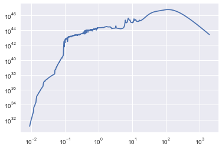
[27]:
print(np.trapz(df['Blue_SF_glx.norm_LIR'][(df['wave']>8) & (df['wave']<1000)][::-1]
,x=3.0E8/(df['wave'][(df['wave']>8) & (df['wave']<1000)][::-1]*1E-6))*1E-26/1E4)
print(np.trapz(df['Blue_SF_glx.norm_LIR'][(df['wave']<8)][::-1]
,x=3.0E8/(df['wave'][(df['wave']<8)][::-1]*1E-6))*1E-26/1E4)
3.82580418875e+29
1.7493619078e+29
[21]:
[21]:
2.1954022988505746
Test stan script¶
[284]:
code="""
functions {
int intFloor(int leftStart, int rightStart, real iReal)
{
// This is absurd. Use bisection algorithm to find int floor.
int left;
int right;
left <- leftStart;
right <- rightStart;
while((left + 1) < right) {
int mid;
// print("left, right, mid, i, ", left, ", ", right, ", ", mid, ", ", iReal);
mid <- left + (right - left) / 2;
if(iReal < mid) {
right <- mid;
}
else {
left <- mid;
}
}
return left;
}
// Interpolate arr using a non-integral index i
// Note: 1 <= i <= length(arr)
real interpolateLinear(real[] arr, real i)
{
int iLeft;
real valLeft;
int iRight;
real valRight;
// print("interpolating ", i);
// Get i, value at left. If exact time match, then return value.
iLeft <- intFloor(1, size(arr), i);
valLeft <- arr[iLeft];
if(iLeft == i) {
return valLeft;
}
// Get i, value at right.
iRight <- iLeft + 1;
valRight <- arr[iRight];
// Linearly interpolate between values at left and right.
return valLeft + (valRight - valLeft) * (i - iLeft);
}
}
data {
int<lower=0> nsrc;//number of sources
// ----SED templates----
int nTemp;
int nz;
int nband;
real SEDs[nTemp,nband,nz];
vector[nband] flux[nsrc];//vector of source src_fes
vector[nband] flux_sig[nsrc];//vector of source src_fes
}
parameters {
vector<lower=5, upper=14>[nTemp] Nbb[nsrc];
real<lower=0.001,upper=8> z[nsrc];
}
transformed parameters{
vector[nband] src_f[nsrc];//vector of source src_fes
for (i in 1:nsrc){
vector[nTemp] f_tmp[nband];
for (b in 1:nband){
for (t in 1:nTemp){
f_tmp[b,t]=pow(10.0,Nbb[i,t])*interpolateLinear(SEDs[t,b], z[i]*1000.0);
}
src_f[i,b]=sum(f_tmp[b]);
}
}
}
model {
for (s in 1:nsrc){
flux[s] ~ normal(src_f[s],flux_sig[s]);
}
}
"""
[67]:
import pystan
[332]:
flux=np.sum(SEDs_comb[:,:,2000].T*10.0**np.array([12,11,11,9]),axis=1)+np.random.normal(0,[1,1,1,0.02,0.5,0.5])
[333]:
flux
[333]:
array([ 7.05378852, 9.77553042, 10.02094853, 0.22954045,
-0.10640105, 2.78533983])
[318]:
data={
'nsrc':1,
'nTemp':SEDs_comb.shape[0],
'nz':SEDs_comb.shape[2],
'nband':6,
'SEDs':SEDs_comb,
'flux':flux[np.newaxis],
'flux_sig':np.array([[1,1,1,0.2,0.5,0.5]])}
[285]:
sm=pystan.StanModel(model_code=code)
INFO:pystan:COMPILING THE C++ CODE FOR MODEL anon_model_f4f65a6f1c1ad1ca4199c2cbb0351f08 NOW.
[319]:
fit_IR_combSED=sm.sampling(data=data,verbose=True, iter=1000,chains=2,seed=194838)
[320]:
fit_IR_combSED
[320]:
Inference for Stan model: anon_model_f4f65a6f1c1ad1ca4199c2cbb0351f08.
2 chains, each with iter=1000; warmup=500; thin=1;
post-warmup draws per chain=500, total post-warmup draws=1000.
mean se_mean sd 2.5% 25% 50% 75% 97.5% n_eff Rhat
Nbb[0,0] 8.75 0.11 2.09 5.18 6.96 8.83 10.53 11.97 341 1.02
Nbb[0,1] 9.75 0.61 2.46 5.17 7.53 10.28 12.22 12.47 16 1.11
Nbb[0,2] 11.77 1.2 2.09 5.58 11.91 12.82 12.88 12.97 3 1.2
Nbb[0,3] 8.33 0.22 2.01 5.27 6.46 8.23 10.11 11.79 83 1.02
z[0] 3.79 0.53 0.74 2.17 3.11 4.07 4.33 4.77 2 1.24
src_f[0,0] 7.64 0.22 0.61 6.48 7.24 7.61 8.04 8.9 8 1.06
src_f[0,1] 10.25 0.1 0.64 8.99 9.84 10.28 10.65 11.56 43 1.03
src_f[0,2] 9.47 0.06 0.84 7.71 8.92 9.5 10.02 11.08 229 1.02
src_f[0,3] 0.06 0.02 0.05 0.03 0.04 0.04 0.05 0.2 7 1.07
src_f[0,4] 0.93 0.07 0.2 0.5 0.81 0.95 1.06 1.31 8 1.1
src_f[0,5] 3.11 0.03 0.37 2.43 2.86 3.09 3.35 3.82 187 1.02
lp__ 0.28 0.09 1.5 -3.2 -0.51 0.62 1.39 2.25 302 1.01
Samples were drawn using NUTS at Mon Dec 4 18:23:14 2017.
For each parameter, n_eff is a crude measure of effective sample size,
and Rhat is the potential scale reduction factor on split chains (at
convergence, Rhat=1).
[308]:
SEDs_com
[308]:
(4, 6, 8000)
[321]:
import xidplus.stan_fit.stan_utility as stan_utility
stan_utility.check_treedepth(fit_IR_combSED)
stan_utility.check_energy(fit_IR_combSED)
stan_utility.check_div(fit_IR_combSED)
0 of 1000 iterations saturated the maximum tree depth of 10 (0.0%)
44.0 of 1000 iterations ended with a divergence (4.4%)
Try running with larger adapt_delta to remove the divergences
[322]:
samples=fit_IR_combSED.extract()
[323]:
nondiv_params, div_params = stan_utility.partition_div(fit_IR_combSED)
WARNING:root:`dtypes` ignored when `permuted` is False.
[324]:
plt.plot(nondiv_params['Nbb'][:,1],nondiv_params['Nbb'][:,0], 'ro')
plt.plot(div_params['Nbb'][:,1],div_params['Nbb'][:,0], 'go')
[324]:
[<matplotlib.lines.Line2D at 0x13b892e48>]
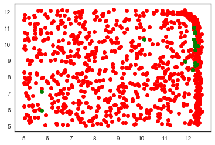
[298]:
plt.plot(nondiv_params['Nbb'][:,1],nondiv_params['Nbb'][:,3], 'ro')
plt.plot(div_params['Nbb'][:,1],div_params['Nbb'][:,3], 'go')
[298]:
[<matplotlib.lines.Line2D at 0x13a7114e0>]
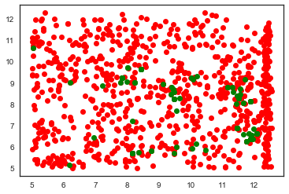
[299]:
plt.plot(nondiv_params['Nbb'][:,2],nondiv_params['Nbb'][:,3], 'ro')
plt.plot(div_params['Nbb'][:,2],div_params['Nbb'][:,3], 'go')
[299]:
[<matplotlib.lines.Line2D at 0x13a7fa630>]
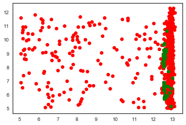
[300]:
plt.plot(nondiv_params['z'][:],nondiv_params['Nbb'][:,0], 'ro')
plt.plot(div_params['z'][:],div_params['Nbb'][:,1], 'go')
[300]:
[<matplotlib.lines.Line2D at 0x13a8a3470>]
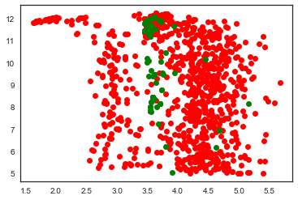
[301]:
plt.figure(figsize=(10,10))
plt.plot(nondiv_params['Nbb'][:,0],nondiv_params['z'], 'ro')
plt.plot(div_params['Nbb'][:,0],div_params['z'], 'go')
plt.plot(x,y,'bo', alpha=0.2)
[301]:
[<matplotlib.lines.Line2D at 0x13b35c320>,
<matplotlib.lines.Line2D at 0x13b364518>,
<matplotlib.lines.Line2D at 0x13b364710>,
<matplotlib.lines.Line2D at 0x13b364908>,
<matplotlib.lines.Line2D at 0x13b364b00>,
<matplotlib.lines.Line2D at 0x13b364cf8>,
<matplotlib.lines.Line2D at 0x13b364ef0>]
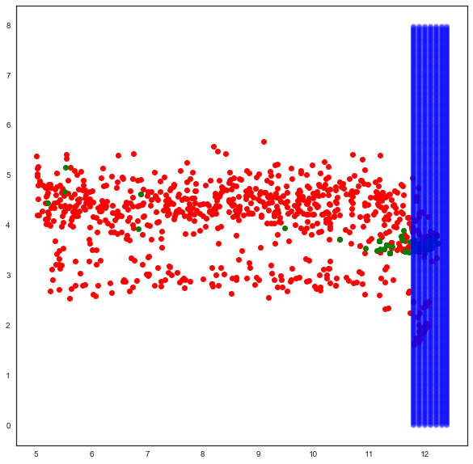
[302]:
div_params['Nbb'].shape
[302]:
(108, 4)
[303]:
red[2000]
[303]:
2.0
[304]:
SEDs_comb.shape
[304]:
(4, 6, 8000)
[135]:
x,y=np.meshgrid(np.arange(11.8,12.5, 0.1), red)
[306]:
plt.plot(samples['z'])
[306]:
[<matplotlib.lines.Line2D at 0x13b594be0>]
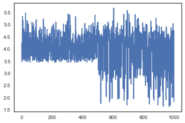
[187]:
plt.plot(samples['Nbb'][:,0,0])
[187]:
[<matplotlib.lines.Line2D at 0x12fbad3c8>]
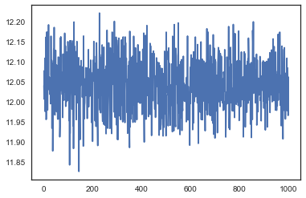
[202]:
div_z=[]
for z in div_params['z']:
div_z.append(np.abs(red-z).min())
nondiv_z=[]
for z in nondiv_params['z']:
nondiv_z.append(np.abs(red-z).min())
[203]:
plt.hist(div_z,color='b', alpha=0.5);
plt.hist(nondiv_z,color='r', alpha=0.5);
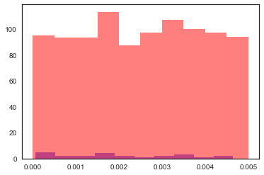
[330]:
sns.set_style("white")
b=0
plt.figure(figsize=(6,6))
s1=0
from astropy.cosmology import Planck13
violin_parts=plt.violinplot(samples['src_f'][:,s1,0:3],[250,350,500], points=60, widths=100,
showmeans=True, showextrema=True, showmedians=True,bw_method=0.5)
# Make all the violin statistics marks red:
for partname in ('cbars','cmins','cmaxes','cmeans','cmedians'):
vp = violin_parts[partname]
vp.set_edgecolor('purple')
vp.set_linewidth(1)
for pc in violin_parts['bodies']:
pc.set_facecolor('purple')
violin_parts=plt.violinplot(samples['src_f'][:,s1,0:3],[250,350,500], points=60, widths=100,
showmeans=True, showextrema=True, showmedians=True,bw_method=0.5)
# Make all the violin statistics marks red:
for partname in ('cbars','cmins','cmaxes','cmeans','cmedians'):
vp = violin_parts[partname]
vp.set_edgecolor('green')
vp.set_linewidth(1)
for pc in violin_parts['bodies']:
pc.set_facecolor('green')
violin_parts=plt.violinplot(samples['src_f'][:,s1,3:6],[24,100,160], points=60, widths=20,showmeans=True, showextrema=True, showmedians=True,bw_method=0.5)
# Make all the violin statistics marks red:
for partname in ('cbars','cmins','cmaxes','cmeans','cmedians'):
vp = violin_parts[partname]
vp.set_edgecolor('green')
vp.set_linewidth(1)
for pc in violin_parts['bodies']:
pc.set_facecolor('green')
for s in np.arange(0,1000,1)[diverg]:
z= samples['z'][s]
div=(4.0*np.pi * np.square(Planck13.luminosity_distance(z).cgs))
div=div.value
print(s,s1,b)
tot_sed=np.power(10.0,samples['Nbb'][s,s1,0])*(1.0+z)*df_comb[str(b)]/div
for b in range(1,4):
tot_sed+=np.power(10.0,samples['Nbb'][s,s1,b])*(1.0+z)*df_comb[str(b)]/div
plt.loglog((z+1.0)*df_comb['wave'],tot_sed, 'b', alpha=0.1)
plt.ylim(10E-7,10E2)
plt.xlim(5,5E3)
#plt.plot([3.6,4.5,5.7,7.9],[2.91E-3,2.38E-3,2.12E-3,9.6E-3], 'ro')
plt.xlabel('Wavelength (microns)')
plt.ylabel('Flux (mJy)')
1 0 0
2 0 3
3 0 3
4 0 3
38 0 3
70 0 3
145 0 3
151 0 3
170 0 3
177 0 3
192 0 3
218 0 3
240 0 3
251 0 3
264 0 3
294 0 3
298 0 3
313 0 3
385 0 3
[330]:
<matplotlib.text.Text at 0x13c345eb8>
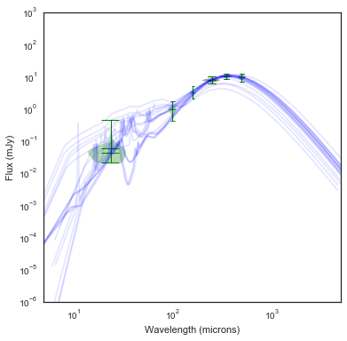
[246]:
b=5
plt.hist(samples['src_f'][:,0,b], alpha=0.5,normed=True);
plt.hist(nondiv_params['src_f'][:,b], color='red', alpha=0.5,normed=True);
plt.hist(div_params['src_f'][:,b], color='green', alpha=0.5,normed=True);
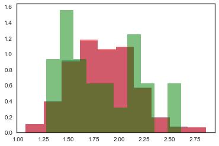
[213]:
samples['z'].shape
[213]:
(1000,)
why/where am I getting divergent transitions?¶
Its not obvious any parameters are causing the problem.
They do not occur at any particular likelihood value
Is it the grid causing issue? Is it the uniform prior?
[233]:
plt.plot(samples['lp__'],samples['Nbb'][:,0,3], 'o',alpha=0.2)
plt.plot(samples['lp__'][diverg],samples['Nbb'][diverg,0,3], 'ro',alpha=0.2)
[233]:
[<matplotlib.lines.Line2D at 0x13223deb8>]
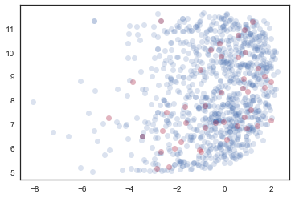
[325]:
diverg=fit_IR_combSED.get_sampler_params()[0]['divergent__']==1.0
[327]:
samples['Nbb'].shape
[327]:
(1000, 1, 4)
[ ]: